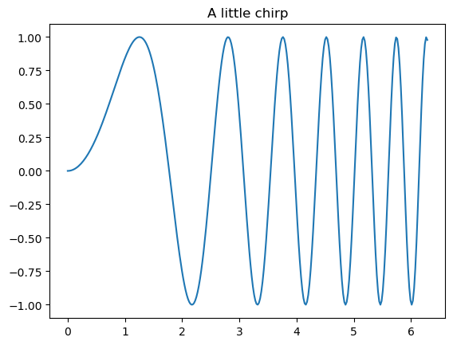

Introduction II - the jupyter ecosystem & notebooks, first look at programming in Python#
Before we get started…#
most of what you’ll see within this lecture was prepared by Ross Markello, Michael Notter and Peer Herholz and further adapted for this course by Peer Herholz, Michael Ernst, and Aylin Kallmayer.
based on Tal Yarkoni’s “Introduction to Python” lecture at Neurohackademy 2019
based on http://www.stavros.io/tutorials/python/ & http://www.swaroopch.com/notes/python
based on oesteban/biss2016 & jvns/pandas-cookbook
Peer Herholz (he/him)
Research affiliate - NeuroDataScience lab at MNI/MIT
Member - BIDS, ReproNim, Brainhack, Neuromod, OHBM SEA-SIG, UNIQUE

 @peerherholz
@peerherholz
Objectives 📍#
learn basic and efficient usage of the
jupyter ecosystem¬ebookswhat is
Jupyter& how to utilizejupyter notebooks
To Jupyter & beyond#

a community of people
an ecosystem of open tools and standards for interactive computing
language-agnostic and modular
empower people to use other open tools
To Jupyter & beyond#

Before we get started#
We’re going to be working in Jupyter notebooks for most of this presentation!
Preferentially, we will do this in a very ‘classical’ manner, i.e., in our browser’. To load yours, do the following:
In your terminal, type jupyter notebook and hit enter. If you’re not automatically directed to a webpage, copy the URL (https://....) printed in the terminal and paste it in your browser. (Note that at the time of this course in 2025, there sometimes seem to be problems opening jupyter notebooks in Safari. In that case, use a different browser like Firefox.)
If you are on a macOS computer and get an error message in the terminal when trying to open ‘jupyter notebook’, go to your miniconda directory (e.g., cd /opt/miniconda3 or cd ~/miniconda3 ) and then to the subfolder bin (cd bin) and run the command ‘jupyter notebook’.
If you are on a windows computer and get an error message in the terminal when trying to open ‘jupyter notebook’, go to your miniconda directory (e.g. ). ‘jupyter’ is found in the subdirectory .\Scripts, so run ‘.\Scripts\jupyter.exe notebook’.
Or if nothing works but you have PyCharm already installed:
Open pyCharm, select “File” in the menu > Open “New File or Directory …” > and then select Jupyter Nnotebook & give a name (e.g., pfp_learn_jupyter).
Let’s first try to open a notebook in a browser and explore what we see there:
Files Tab#
The files tab provides an interactive view of the portion of the filesystem which is accessible by the user. This is typically rooted by the directory in which the notebook server was started.
The top of the files list displays the structure of the current directory. It is possible to navigate the filesystem by clicking on these breadcrumbs or on the directories displayed in the notebook list.
A new notebook can be created by clicking on the New dropdown button at the top of the list, and selecting the desired language kernel. We’ll be using Python, but Kernels for a plethora of other languages exist. A comprehenisve list of Jupyter Kernels can be found here.
Notebooks can also be uploaded to the current directory by dragging a notebook file onto the list or by clicking the Upload button at the top of the list.

The Notebook#
When a notebook is opened, a new browser tab will be created which presents the notebook user interface (UI). This UI allows for interactively editing and running the notebook document.
A new notebook can be created from the dashboard by clicking on the Files tab, followed by the New dropdown button, and then selecting the language of choice for the notebook.
Further information on ‘jupyter notebooks’ can be found by selecting ‘Help’.
Header#
At the top of the notebook document is a header which contains the notebook title, a menubar, and toolbar. This header remains fixed at the top of the screen, even as the body of the notebook is scrolled. The title can be edited in-place (which renames the notebook file), and the menubar and toolbar contain a variety of actions which control notebook navigation and document structure.

Body#
The body of a notebook is composed of cells. Each cell contains either markdown, code input, code output, or raw text. Cells can be included in any order and edited at-will, allowing for a large amount of flexibility for constructing a narrative.
Markdown cells- These are used to build anicely formatted narrativearound thecodein the document. The majority of this lesson is composed ofmarkdown cells.To get a
markdown cellyou can either select thecelland useesc+mor change the cell type to ‘Markdown’ via the ‘drop down menu’ in the toolbar with the navigation buttons.

Code cells- These are used to define thecomputational codein thedocument. They come intwo forms:the
input cellwhere theusertypes thecodeto beexecuted,and the
output cellwhich is therepresentationof theexecuted code. Depending on thecode, thisrepresentationmay be asimple scalar value, or something more complex like aplotor aninteractive widget.
To get a
code cellyou can either select thecelland useesc+yor again via thedropdown menuin the toolbar.
print('hello world')
hello world
Raw cells- These are used whentextneeds to be included inraw form, withoutexecutionortransformation.
Modality#
The notebook user interface is modal. This means that the keyboard behaves differently depending upon the current mode of the notebook. A notebook has two modes: edit and command.
Edit mode is indicated by a blue cell border and a prompt showing in the editor area. (Note that the color of the frames may differ, but you will notice the difference between edit and command mode!
When a cell is in edit mode, you can type into the cell, like a normal text editor.

Command mode is indicated by a grey cell border. When in command mode, the structure of the notebook can be modified as a whole, but the text in individual cells cannot be changed. Most importantly, the keyboard is mapped to a set of shortcuts for efficiently performing notebook and cell actions. For example, pressing a when in command mode, will insert a cell above the current cell, ‘b’ will insert a cell below, and ‘dd’ will delete the current cell. No modifier is needed. As an other example, there is a third way to change the type (code, markdown or raw; see above) of the current cell when in command mode, i.e., by typing the command mode shortcuts ‘y’, ‘m’ or ‘r’, respectively.

Keyboard Navigation#
The modal user interface of the IPython Notebook has been optimized for efficient keyboard usage. This is made possible by having two different sets of keyboard shortcuts: one set that is active in edit mode and another in command mode.
The most important keyboard shortcuts are Enter, which enters edit mode, and Esc, which enters command mode.
In edit mode, most of the keyboard is dedicated to typing into the cell's editor. Thus, in edit mode there are relatively few shortcuts. In command mode, the entire keyboard is available for shortcuts, so there are many more possibilities.
The following images give an overview of the available keyboard shortcuts. These can viewed in the notebook at any time via the Help -> Keyboard Shortcuts menu item.

The following shortcuts have been found to be the most useful in day-to-day tasks:#
Basic navigation:
enter,shift-enter,up/k,down/jSaving the
notebook:sCell types:y,m,1-6,rCell creation:a,bCell editing:x,c,v,d,z,ctrl+shift+-Kernel operations:i,.
Additionally, you should get in the habit of using Tab to auto-complete your code. This not only speeds up things, but also makes sure that your variable and file names or the specific function you want to use is actually spelled correctly. In edit mode you should further get used to use the Ctrl + down/up/left/right shortcuts to quickly navigate trough your code cells (on macOS, use ‘Cmd’ button instead of ‘Ctrl’).
Markdown Cells#
Text can be added to IPython Notebooks using Markdown cells. Markdown is a popular markup language that is a superset of HTML. Its specification (note also ‘basics’ and ‘syntax’ tabs) can be found here:
http://daringfireball.net/projects/markdown/
You can view the source of a cell by double clicking on it, or while the cell is selected in command mode, press Enter to edit it. Once a cell has been edited, use Shift-Enter to re-render it.
Markdown basics#
You can make text italic or bold.
You can build nested itemized or enumerated lists:
One
Sublist
This
Sublist - That - The other thing
Two
Sublist
Three
Sublist
Now another list:
Here we go
Sublist
Sublist
There we go
Now this
You can add horizontal rules:
Here is a blockquote (i.e the Zen of Python) :
Beautiful is better than ugly. Explicit is better than implicit. Simple is better than complex. Complex is better than complicated. Flat is better than nested. Sparse is better than dense. Readability counts. Special cases aren’t special enough to break the rules. Although practicality beats purity. Errors should never pass silently. Unless explicitly silenced. In the face of ambiguity, refuse the temptation to guess. There should be one– and preferably only one –obvious way to do it. Although that way may not be obvious at first unless you’re Dutch. Now is better than never. Although never is often better than right now. If the implementation is hard to explain, it’s a bad idea. If the implementation is easy to explain, it may be a good idea. Namespaces are one honking great idea – let’s do more of those!
You can add headings using Markdown’s syntax:
# Heading 1 # Heading 2 ## Heading 2.1 ## Heading 2.2
Embedded code#
You can embed code meant for illustration instead of execution in Python:
def f(x):
"""a docstring"""
return x**2
or other languages:
if (i=0; i<n; i++) {
printf("hello %d\n", i);
x += 4;
}
Github flavored markdown (GFM)#
The Notebook webapp supports Github flavored markdown meaning that you can use triple backticks for code blocks
print "Hello World"
console.log("Hello World")
Gives
print "Hello World"
console.log("Hello World")
And a table like this :
This |
is |
|---|---|
a |
table |
or A nice HTML Table
This |
is |
|---|---|
a |
table |
General HTML#
Because Markdown is a superset of HTML you can even add things like HTML tables:
| Header 1 | Header 2 |
|---|---|
| row 1, cell 1 | row 1, cell 2 |
| row 2, cell 1 | row 2, cell 2 |
Local files#
If you have local files in your Notebook directory, you can refer to these files in Markdown cells directly:
[subdirectory/]<filename>
For example, in the static folder, we have the logo:
<img src="static/pfp_logo.png" />
These do not embed the data into the notebook file, and require that the files exist when you are viewing the notebook.
Security of local files#
Note that this means that the IPython notebook server also acts as a generic file server for files inside the same tree as your notebooks. Access is not granted outside the notebook folder so you have strict control over what files are visible, but for this reason it is highly recommended that you do not run the notebook server with a notebook directory at a high level in your filesystem (e.g. your home directory).
Code cells#
When executing code in IPython, all valid Python syntax works as-is, but IPython provides a number of features designed to make the interactive experience more fluid and efficient. First, we need to explain how to run cells. Try to run the cell below!
import pandas as pd
print("Hi! This is a cell. Click on it and press the ▶ button above to run it")
Hi! This is a cell. Click on it and press the ▶ button above to run it
You can also run a cell with Ctrl+Enter (macOS: Cmd+Enter) or Shift+Enter. Experiment a bit with that.
Tab Completion#
One of the most useful things about Jupyter Notebook is its tab completion.
Try this: click just after read_csv( in the cell below and press Shift+Tab.
pd.read_csv(
A help window should pop up with the documentation for the read_csv function.
This can be very useful.
Okay, let’s try tab completion for function names!
pd.r
You should see something like this:

Get Help#
There’s an additional way on how you can reach an extensive help box for example for python functions. Instead, you can also use obj? or obj?? to get help or more help for an object, where ‘obj’ is a placeholder for example for a function like ‘read_csv’ from the ‘pandas’ package.
pd.read_csv?
Signature:
pd.read_csv(
filepath_or_buffer: 'FilePath | ReadCsvBuffer[bytes] | ReadCsvBuffer[str]',
*,
sep: 'str | None | lib.NoDefault' = <no_default>,
delimiter: 'str | None | lib.NoDefault' = None,
header: "int | Sequence[int] | None | Literal['infer']" = 'infer',
names: 'Sequence[Hashable] | None | lib.NoDefault' = <no_default>,
index_col: 'IndexLabel | Literal[False] | None' = None,
usecols: 'UsecolsArgType' = None,
dtype: 'DtypeArg | None' = None,
engine: 'CSVEngine | None' = None,
converters: 'Mapping[Hashable, Callable] | None' = None,
true_values: 'list | None' = None,
false_values: 'list | None' = None,
skipinitialspace: 'bool' = False,
skiprows: 'list[int] | int | Callable[[Hashable], bool] | None' = None,
skipfooter: 'int' = 0,
nrows: 'int | None' = None,
na_values: 'Hashable | Iterable[Hashable] | Mapping[Hashable, Iterable[Hashable]] | None' = None,
keep_default_na: 'bool' = True,
na_filter: 'bool' = True,
verbose: 'bool | lib.NoDefault' = <no_default>,
skip_blank_lines: 'bool' = True,
parse_dates: 'bool | Sequence[Hashable] | None' = None,
infer_datetime_format: 'bool | lib.NoDefault' = <no_default>,
keep_date_col: 'bool | lib.NoDefault' = <no_default>,
date_parser: 'Callable | lib.NoDefault' = <no_default>,
date_format: 'str | dict[Hashable, str] | None' = None,
dayfirst: 'bool' = False,
cache_dates: 'bool' = True,
iterator: 'bool' = False,
chunksize: 'int | None' = None,
compression: 'CompressionOptions' = 'infer',
thousands: 'str | None' = None,
decimal: 'str' = '.',
lineterminator: 'str | None' = None,
quotechar: 'str' = '"',
quoting: 'int' = 0,
doublequote: 'bool' = True,
escapechar: 'str | None' = None,
comment: 'str | None' = None,
encoding: 'str | None' = None,
encoding_errors: 'str | None' = 'strict',
dialect: 'str | csv.Dialect | None' = None,
on_bad_lines: 'str' = 'error',
delim_whitespace: 'bool | lib.NoDefault' = <no_default>,
low_memory: 'bool' = True,
memory_map: 'bool' = False,
float_precision: "Literal['high', 'legacy'] | None" = None,
storage_options: 'StorageOptions | None' = None,
dtype_backend: 'DtypeBackend | lib.NoDefault' = <no_default>,
) -> 'DataFrame | TextFileReader'
Docstring:
Read a comma-separated values (csv) file into DataFrame.
Also supports optionally iterating or breaking of the file
into chunks.
Additional help can be found in the online docs for
`IO Tools <https://pandas.pydata.org/pandas-docs/stable/user_guide/io.html>`_.
Parameters
----------
filepath_or_buffer : str, path object or file-like object
Any valid string path is acceptable. The string could be a URL. Valid
URL schemes include http, ftp, s3, gs, and file. For file URLs, a host is
expected. A local file could be: file://localhost/path/to/table.csv.
If you want to pass in a path object, pandas accepts any ``os.PathLike``.
By file-like object, we refer to objects with a ``read()`` method, such as
a file handle (e.g. via builtin ``open`` function) or ``StringIO``.
sep : str, default ','
Character or regex pattern to treat as the delimiter. If ``sep=None``, the
C engine cannot automatically detect
the separator, but the Python parsing engine can, meaning the latter will
be used and automatically detect the separator from only the first valid
row of the file by Python's builtin sniffer tool, ``csv.Sniffer``.
In addition, separators longer than 1 character and different from
``'\s+'`` will be interpreted as regular expressions and will also force
the use of the Python parsing engine. Note that regex delimiters are prone
to ignoring quoted data. Regex example: ``'\r\t'``.
delimiter : str, optional
Alias for ``sep``.
header : int, Sequence of int, 'infer' or None, default 'infer'
Row number(s) containing column labels and marking the start of the
data (zero-indexed). Default behavior is to infer the column names: if no ``names``
are passed the behavior is identical to ``header=0`` and column
names are inferred from the first line of the file, if column
names are passed explicitly to ``names`` then the behavior is identical to
``header=None``. Explicitly pass ``header=0`` to be able to
replace existing names. The header can be a list of integers that
specify row locations for a :class:`~pandas.MultiIndex` on the columns
e.g. ``[0, 1, 3]``. Intervening rows that are not specified will be
skipped (e.g. 2 in this example is skipped). Note that this
parameter ignores commented lines and empty lines if
``skip_blank_lines=True``, so ``header=0`` denotes the first line of
data rather than the first line of the file.
names : Sequence of Hashable, optional
Sequence of column labels to apply. If the file contains a header row,
then you should explicitly pass ``header=0`` to override the column names.
Duplicates in this list are not allowed.
index_col : Hashable, Sequence of Hashable or False, optional
Column(s) to use as row label(s), denoted either by column labels or column
indices. If a sequence of labels or indices is given, :class:`~pandas.MultiIndex`
will be formed for the row labels.
Note: ``index_col=False`` can be used to force pandas to *not* use the first
column as the index, e.g., when you have a malformed file with delimiters at
the end of each line.
usecols : Sequence of Hashable or Callable, optional
Subset of columns to select, denoted either by column labels or column indices.
If list-like, all elements must either
be positional (i.e. integer indices into the document columns) or strings
that correspond to column names provided either by the user in ``names`` or
inferred from the document header row(s). If ``names`` are given, the document
header row(s) are not taken into account. For example, a valid list-like
``usecols`` parameter would be ``[0, 1, 2]`` or ``['foo', 'bar', 'baz']``.
Element order is ignored, so ``usecols=[0, 1]`` is the same as ``[1, 0]``.
To instantiate a :class:`~pandas.DataFrame` from ``data`` with element order
preserved use ``pd.read_csv(data, usecols=['foo', 'bar'])[['foo', 'bar']]``
for columns in ``['foo', 'bar']`` order or
``pd.read_csv(data, usecols=['foo', 'bar'])[['bar', 'foo']]``
for ``['bar', 'foo']`` order.
If callable, the callable function will be evaluated against the column
names, returning names where the callable function evaluates to ``True``. An
example of a valid callable argument would be ``lambda x: x.upper() in
['AAA', 'BBB', 'DDD']``. Using this parameter results in much faster
parsing time and lower memory usage.
dtype : dtype or dict of {Hashable : dtype}, optional
Data type(s) to apply to either the whole dataset or individual columns.
E.g., ``{'a': np.float64, 'b': np.int32, 'c': 'Int64'}``
Use ``str`` or ``object`` together with suitable ``na_values`` settings
to preserve and not interpret ``dtype``.
If ``converters`` are specified, they will be applied INSTEAD
of ``dtype`` conversion.
.. versionadded:: 1.5.0
Support for ``defaultdict`` was added. Specify a ``defaultdict`` as input where
the default determines the ``dtype`` of the columns which are not explicitly
listed.
engine : {'c', 'python', 'pyarrow'}, optional
Parser engine to use. The C and pyarrow engines are faster, while the python engine
is currently more feature-complete. Multithreading is currently only supported by
the pyarrow engine.
.. versionadded:: 1.4.0
The 'pyarrow' engine was added as an *experimental* engine, and some features
are unsupported, or may not work correctly, with this engine.
converters : dict of {Hashable : Callable}, optional
Functions for converting values in specified columns. Keys can either
be column labels or column indices.
true_values : list, optional
Values to consider as ``True`` in addition to case-insensitive variants of 'True'.
false_values : list, optional
Values to consider as ``False`` in addition to case-insensitive variants of 'False'.
skipinitialspace : bool, default False
Skip spaces after delimiter.
skiprows : int, list of int or Callable, optional
Line numbers to skip (0-indexed) or number of lines to skip (``int``)
at the start of the file.
If callable, the callable function will be evaluated against the row
indices, returning ``True`` if the row should be skipped and ``False`` otherwise.
An example of a valid callable argument would be ``lambda x: x in [0, 2]``.
skipfooter : int, default 0
Number of lines at bottom of file to skip (Unsupported with ``engine='c'``).
nrows : int, optional
Number of rows of file to read. Useful for reading pieces of large files.
na_values : Hashable, Iterable of Hashable or dict of {Hashable : Iterable}, optional
Additional strings to recognize as ``NA``/``NaN``. If ``dict`` passed, specific
per-column ``NA`` values. By default the following values are interpreted as
``NaN``: " ", "#N/A", "#N/A N/A", "#NA", "-1.#IND", "-1.#QNAN", "-NaN", "-nan",
"1.#IND", "1.#QNAN", "<NA>", "N/A", "NA", "NULL", "NaN", "None",
"n/a", "nan", "null ".
keep_default_na : bool, default True
Whether or not to include the default ``NaN`` values when parsing the data.
Depending on whether ``na_values`` is passed in, the behavior is as follows:
* If ``keep_default_na`` is ``True``, and ``na_values`` are specified, ``na_values``
is appended to the default ``NaN`` values used for parsing.
* If ``keep_default_na`` is ``True``, and ``na_values`` are not specified, only
the default ``NaN`` values are used for parsing.
* If ``keep_default_na`` is ``False``, and ``na_values`` are specified, only
the ``NaN`` values specified ``na_values`` are used for parsing.
* If ``keep_default_na`` is ``False``, and ``na_values`` are not specified, no
strings will be parsed as ``NaN``.
Note that if ``na_filter`` is passed in as ``False``, the ``keep_default_na`` and
``na_values`` parameters will be ignored.
na_filter : bool, default True
Detect missing value markers (empty strings and the value of ``na_values``). In
data without any ``NA`` values, passing ``na_filter=False`` can improve the
performance of reading a large file.
verbose : bool, default False
Indicate number of ``NA`` values placed in non-numeric columns.
.. deprecated:: 2.2.0
skip_blank_lines : bool, default True
If ``True``, skip over blank lines rather than interpreting as ``NaN`` values.
parse_dates : bool, list of Hashable, list of lists or dict of {Hashable : list}, default False
The behavior is as follows:
* ``bool``. If ``True`` -> try parsing the index. Note: Automatically set to
``True`` if ``date_format`` or ``date_parser`` arguments have been passed.
* ``list`` of ``int`` or names. e.g. If ``[1, 2, 3]`` -> try parsing columns 1, 2, 3
each as a separate date column.
* ``list`` of ``list``. e.g. If ``[[1, 3]]`` -> combine columns 1 and 3 and parse
as a single date column. Values are joined with a space before parsing.
* ``dict``, e.g. ``{'foo' : [1, 3]}`` -> parse columns 1, 3 as date and call
result 'foo'. Values are joined with a space before parsing.
If a column or index cannot be represented as an array of ``datetime``,
say because of an unparsable value or a mixture of timezones, the column
or index will be returned unaltered as an ``object`` data type. For
non-standard ``datetime`` parsing, use :func:`~pandas.to_datetime` after
:func:`~pandas.read_csv`.
Note: A fast-path exists for iso8601-formatted dates.
infer_datetime_format : bool, default False
If ``True`` and ``parse_dates`` is enabled, pandas will attempt to infer the
format of the ``datetime`` strings in the columns, and if it can be inferred,
switch to a faster method of parsing them. In some cases this can increase
the parsing speed by 5-10x.
.. deprecated:: 2.0.0
A strict version of this argument is now the default, passing it has no effect.
keep_date_col : bool, default False
If ``True`` and ``parse_dates`` specifies combining multiple columns then
keep the original columns.
date_parser : Callable, optional
Function to use for converting a sequence of string columns to an array of
``datetime`` instances. The default uses ``dateutil.parser.parser`` to do the
conversion. pandas will try to call ``date_parser`` in three different ways,
advancing to the next if an exception occurs: 1) Pass one or more arrays
(as defined by ``parse_dates``) as arguments; 2) concatenate (row-wise) the
string values from the columns defined by ``parse_dates`` into a single array
and pass that; and 3) call ``date_parser`` once for each row using one or
more strings (corresponding to the columns defined by ``parse_dates``) as
arguments.
.. deprecated:: 2.0.0
Use ``date_format`` instead, or read in as ``object`` and then apply
:func:`~pandas.to_datetime` as-needed.
date_format : str or dict of column -> format, optional
Format to use for parsing dates when used in conjunction with ``parse_dates``.
The strftime to parse time, e.g. :const:`"%d/%m/%Y"`. See
`strftime documentation
<https://docs.python.org/3/library/datetime.html
#strftime-and-strptime-behavior>`_ for more information on choices, though
note that :const:`"%f"` will parse all the way up to nanoseconds.
You can also pass:
- "ISO8601", to parse any `ISO8601 <https://en.wikipedia.org/wiki/ISO_8601>`_
time string (not necessarily in exactly the same format);
- "mixed", to infer the format for each element individually. This is risky,
and you should probably use it along with `dayfirst`.
.. versionadded:: 2.0.0
dayfirst : bool, default False
DD/MM format dates, international and European format.
cache_dates : bool, default True
If ``True``, use a cache of unique, converted dates to apply the ``datetime``
conversion. May produce significant speed-up when parsing duplicate
date strings, especially ones with timezone offsets.
iterator : bool, default False
Return ``TextFileReader`` object for iteration or getting chunks with
``get_chunk()``.
chunksize : int, optional
Number of lines to read from the file per chunk. Passing a value will cause the
function to return a ``TextFileReader`` object for iteration.
See the `IO Tools docs
<https://pandas.pydata.org/pandas-docs/stable/io.html#io-chunking>`_
for more information on ``iterator`` and ``chunksize``.
compression : str or dict, default 'infer'
For on-the-fly decompression of on-disk data. If 'infer' and 'filepath_or_buffer' is
path-like, then detect compression from the following extensions: '.gz',
'.bz2', '.zip', '.xz', '.zst', '.tar', '.tar.gz', '.tar.xz' or '.tar.bz2'
(otherwise no compression).
If using 'zip' or 'tar', the ZIP file must contain only one data file to be read in.
Set to ``None`` for no decompression.
Can also be a dict with key ``'method'`` set
to one of {``'zip'``, ``'gzip'``, ``'bz2'``, ``'zstd'``, ``'xz'``, ``'tar'``} and
other key-value pairs are forwarded to
``zipfile.ZipFile``, ``gzip.GzipFile``,
``bz2.BZ2File``, ``zstandard.ZstdDecompressor``, ``lzma.LZMAFile`` or
``tarfile.TarFile``, respectively.
As an example, the following could be passed for Zstandard decompression using a
custom compression dictionary:
``compression={'method': 'zstd', 'dict_data': my_compression_dict}``.
.. versionadded:: 1.5.0
Added support for `.tar` files.
.. versionchanged:: 1.4.0 Zstandard support.
thousands : str (length 1), optional
Character acting as the thousands separator in numerical values.
decimal : str (length 1), default '.'
Character to recognize as decimal point (e.g., use ',' for European data).
lineterminator : str (length 1), optional
Character used to denote a line break. Only valid with C parser.
quotechar : str (length 1), optional
Character used to denote the start and end of a quoted item. Quoted
items can include the ``delimiter`` and it will be ignored.
quoting : {0 or csv.QUOTE_MINIMAL, 1 or csv.QUOTE_ALL, 2 or csv.QUOTE_NONNUMERIC, 3 or csv.QUOTE_NONE}, default csv.QUOTE_MINIMAL
Control field quoting behavior per ``csv.QUOTE_*`` constants. Default is
``csv.QUOTE_MINIMAL`` (i.e., 0) which implies that only fields containing special
characters are quoted (e.g., characters defined in ``quotechar``, ``delimiter``,
or ``lineterminator``.
doublequote : bool, default True
When ``quotechar`` is specified and ``quoting`` is not ``QUOTE_NONE``, indicate
whether or not to interpret two consecutive ``quotechar`` elements INSIDE a
field as a single ``quotechar`` element.
escapechar : str (length 1), optional
Character used to escape other characters.
comment : str (length 1), optional
Character indicating that the remainder of line should not be parsed.
If found at the beginning
of a line, the line will be ignored altogether. This parameter must be a
single character. Like empty lines (as long as ``skip_blank_lines=True``),
fully commented lines are ignored by the parameter ``header`` but not by
``skiprows``. For example, if ``comment='#'``, parsing
``#empty\na,b,c\n1,2,3`` with ``header=0`` will result in ``'a,b,c'`` being
treated as the header.
encoding : str, optional, default 'utf-8'
Encoding to use for UTF when reading/writing (ex. ``'utf-8'``). `List of Python
standard encodings
<https://docs.python.org/3/library/codecs.html#standard-encodings>`_ .
encoding_errors : str, optional, default 'strict'
How encoding errors are treated. `List of possible values
<https://docs.python.org/3/library/codecs.html#error-handlers>`_ .
.. versionadded:: 1.3.0
dialect : str or csv.Dialect, optional
If provided, this parameter will override values (default or not) for the
following parameters: ``delimiter``, ``doublequote``, ``escapechar``,
``skipinitialspace``, ``quotechar``, and ``quoting``. If it is necessary to
override values, a ``ParserWarning`` will be issued. See ``csv.Dialect``
documentation for more details.
on_bad_lines : {'error', 'warn', 'skip'} or Callable, default 'error'
Specifies what to do upon encountering a bad line (a line with too many fields).
Allowed values are :
- ``'error'``, raise an Exception when a bad line is encountered.
- ``'warn'``, raise a warning when a bad line is encountered and skip that line.
- ``'skip'``, skip bad lines without raising or warning when they are encountered.
.. versionadded:: 1.3.0
.. versionadded:: 1.4.0
- Callable, function with signature
``(bad_line: list[str]) -> list[str] | None`` that will process a single
bad line. ``bad_line`` is a list of strings split by the ``sep``.
If the function returns ``None``, the bad line will be ignored.
If the function returns a new ``list`` of strings with more elements than
expected, a ``ParserWarning`` will be emitted while dropping extra elements.
Only supported when ``engine='python'``
.. versionchanged:: 2.2.0
- Callable, function with signature
as described in `pyarrow documentation
<https://arrow.apache.org/docs/python/generated/pyarrow.csv.ParseOptions.html
#pyarrow.csv.ParseOptions.invalid_row_handler>`_ when ``engine='pyarrow'``
delim_whitespace : bool, default False
Specifies whether or not whitespace (e.g. ``' '`` or ``'\t'``) will be
used as the ``sep`` delimiter. Equivalent to setting ``sep='\s+'``. If this option
is set to ``True``, nothing should be passed in for the ``delimiter``
parameter.
.. deprecated:: 2.2.0
Use ``sep="\s+"`` instead.
low_memory : bool, default True
Internally process the file in chunks, resulting in lower memory use
while parsing, but possibly mixed type inference. To ensure no mixed
types either set ``False``, or specify the type with the ``dtype`` parameter.
Note that the entire file is read into a single :class:`~pandas.DataFrame`
regardless, use the ``chunksize`` or ``iterator`` parameter to return the data in
chunks. (Only valid with C parser).
memory_map : bool, default False
If a filepath is provided for ``filepath_or_buffer``, map the file object
directly onto memory and access the data directly from there. Using this
option can improve performance because there is no longer any I/O overhead.
float_precision : {'high', 'legacy', 'round_trip'}, optional
Specifies which converter the C engine should use for floating-point
values. The options are ``None`` or ``'high'`` for the ordinary converter,
``'legacy'`` for the original lower precision pandas converter, and
``'round_trip'`` for the round-trip converter.
storage_options : dict, optional
Extra options that make sense for a particular storage connection, e.g.
host, port, username, password, etc. For HTTP(S) URLs the key-value pairs
are forwarded to ``urllib.request.Request`` as header options. For other
URLs (e.g. starting with "s3://", and "gcs://") the key-value pairs are
forwarded to ``fsspec.open``. Please see ``fsspec`` and ``urllib`` for more
details, and for more examples on storage options refer `here
<https://pandas.pydata.org/docs/user_guide/io.html?
highlight=storage_options#reading-writing-remote-files>`_.
dtype_backend : {'numpy_nullable', 'pyarrow'}, default 'numpy_nullable'
Back-end data type applied to the resultant :class:`DataFrame`
(still experimental). Behaviour is as follows:
* ``"numpy_nullable"``: returns nullable-dtype-backed :class:`DataFrame`
(default).
* ``"pyarrow"``: returns pyarrow-backed nullable :class:`ArrowDtype`
DataFrame.
.. versionadded:: 2.0
Returns
-------
DataFrame or TextFileReader
A comma-separated values (csv) file is returned as two-dimensional
data structure with labeled axes.
See Also
--------
DataFrame.to_csv : Write DataFrame to a comma-separated values (csv) file.
read_table : Read general delimited file into DataFrame.
read_fwf : Read a table of fixed-width formatted lines into DataFrame.
Examples
--------
>>> pd.read_csv('data.csv') # doctest: +SKIP
Source:
@Appender(
_doc_read_csv_and_table.format(
func_name="read_csv",
summary="Read a comma-separated values (csv) file into DataFrame.",
see_also_func_name="read_table",
see_also_func_summary="Read general delimited file into DataFrame.",
_default_sep="','",
storage_options=_shared_docs["storage_options"],
decompression_options=_shared_docs["decompression_options"]
% "filepath_or_buffer",
)
)
def read_csv(
filepath_or_buffer: FilePath | ReadCsvBuffer[bytes] | ReadCsvBuffer[str],
*,
sep: str | None | lib.NoDefault = lib.no_default,
delimiter: str | None | lib.NoDefault = None,
# Column and Index Locations and Names
header: int | Sequence[int] | None | Literal["infer"] = "infer",
names: Sequence[Hashable] | None | lib.NoDefault = lib.no_default,
index_col: IndexLabel | Literal[False] | None = None,
usecols: UsecolsArgType = None,
# General Parsing Configuration
dtype: DtypeArg | None = None,
engine: CSVEngine | None = None,
converters: Mapping[Hashable, Callable] | None = None,
true_values: list | None = None,
false_values: list | None = None,
skipinitialspace: bool = False,
skiprows: list[int] | int | Callable[[Hashable], bool] | None = None,
skipfooter: int = 0,
nrows: int | None = None,
# NA and Missing Data Handling
na_values: Hashable
| Iterable[Hashable]
| Mapping[Hashable, Iterable[Hashable]]
| None = None,
keep_default_na: bool = True,
na_filter: bool = True,
verbose: bool | lib.NoDefault = lib.no_default,
skip_blank_lines: bool = True,
# Datetime Handling
parse_dates: bool | Sequence[Hashable] | None = None,
infer_datetime_format: bool | lib.NoDefault = lib.no_default,
keep_date_col: bool | lib.NoDefault = lib.no_default,
date_parser: Callable | lib.NoDefault = lib.no_default,
date_format: str | dict[Hashable, str] | None = None,
dayfirst: bool = False,
cache_dates: bool = True,
# Iteration
iterator: bool = False,
chunksize: int | None = None,
# Quoting, Compression, and File Format
compression: CompressionOptions = "infer",
thousands: str | None = None,
decimal: str = ".",
lineterminator: str | None = None,
quotechar: str = '"',
quoting: int = csv.QUOTE_MINIMAL,
doublequote: bool = True,
escapechar: str | None = None,
comment: str | None = None,
encoding: str | None = None,
encoding_errors: str | None = "strict",
dialect: str | csv.Dialect | None = None,
# Error Handling
on_bad_lines: str = "error",
# Internal
delim_whitespace: bool | lib.NoDefault = lib.no_default,
low_memory: bool = _c_parser_defaults["low_memory"],
memory_map: bool = False,
float_precision: Literal["high", "legacy"] | None = None,
storage_options: StorageOptions | None = None,
dtype_backend: DtypeBackend | lib.NoDefault = lib.no_default,
) -> DataFrame | TextFileReader:
if keep_date_col is not lib.no_default:
# GH#55569
warnings.warn(
"The 'keep_date_col' keyword in pd.read_csv is deprecated and "
"will be removed in a future version. Explicitly remove unwanted "
"columns after parsing instead.",
FutureWarning,
stacklevel=find_stack_level(),
)
else:
keep_date_col = False
if lib.is_list_like(parse_dates):
# GH#55569
depr = False
# error: Item "bool" of "bool | Sequence[Hashable] | None" has no
# attribute "__iter__" (not iterable)
if not all(is_hashable(x) for x in parse_dates): # type: ignore[union-attr]
depr = True
elif isinstance(parse_dates, dict) and any(
lib.is_list_like(x) for x in parse_dates.values()
):
depr = True
if depr:
warnings.warn(
"Support for nested sequences for 'parse_dates' in pd.read_csv "
"is deprecated. Combine the desired columns with pd.to_datetime "
"after parsing instead.",
FutureWarning,
stacklevel=find_stack_level(),
)
if infer_datetime_format is not lib.no_default:
warnings.warn(
"The argument 'infer_datetime_format' is deprecated and will "
"be removed in a future version. "
"A strict version of it is now the default, see "
"https://pandas.pydata.org/pdeps/0004-consistent-to-datetime-parsing.html. "
"You can safely remove this argument.",
FutureWarning,
stacklevel=find_stack_level(),
)
if delim_whitespace is not lib.no_default:
# GH#55569
warnings.warn(
"The 'delim_whitespace' keyword in pd.read_csv is deprecated and "
"will be removed in a future version. Use ``sep='\\s+'`` instead",
FutureWarning,
stacklevel=find_stack_level(),
)
else:
delim_whitespace = False
if verbose is not lib.no_default:
# GH#55569
warnings.warn(
"The 'verbose' keyword in pd.read_csv is deprecated and "
"will be removed in a future version.",
FutureWarning,
stacklevel=find_stack_level(),
)
else:
verbose = False
# locals() should never be modified
kwds = locals().copy()
del kwds["filepath_or_buffer"]
del kwds["sep"]
kwds_defaults = _refine_defaults_read(
dialect,
delimiter,
delim_whitespace,
engine,
sep,
on_bad_lines,
names,
defaults={"delimiter": ","},
dtype_backend=dtype_backend,
)
kwds.update(kwds_defaults)
return _read(filepath_or_buffer, kwds)
File: ~/miniconda3/lib/python3.13/site-packages/pandas/io/parsers/readers.py
Type: function
Writing code#
Writing code in a notebook is pretty normal.
def print_10_nums():
for i in range(10):
print(i)
print_10_nums()
0
1
2
3
4
5
6
7
8
9
If you messed something up and want to revert to an older version of a code in a cell, use Ctrl+Z or to go back Ctrl+Shift+Z (use ‘Cmd’ instead of ‘Ctrl’ on macOS).
For a full list of all keyboard shortcuts, check Help > Keyboard Shortcuts.
The interactive workflow: input, output, history#
Notebooks provide various options for inputs and outputs, while also allowing to access the history of run commands.
2+10
you can access the output of the most recent cell by simply using _. The underscore variable will continously be updated everytime you run a cell
_+10
_
same goes for the second-to-last output via a double underscore, the third-to-last output via a triple underscore and so on
___
You can suppress the storage and rendering of output if you append ; to the last cell (this comes in handy when plotting with matplotlib, for example):
10+20;
_
As this notation get’s messy real quick, use other ways to access earlier outputs using the _N and Out[N] variables. Here, ‘N’ refers to the continuous numbers of the cells that you see to the left of each cell. For example, if you want to refer to the recently executed cell with the number ‘10’, use the following syntax:
Out[10]
_10 == Out[10]
Previous inputs are available, too:
In[11]
_i
and to be even more explicit use %history
%history -n 1-5
Accessing the underlying operating system#
Through notebooks you can also access the underlying operating system and communicate with it as you would do in e.g. a terminal via bash. For example, the following command ouputs the path to the folder in which you were when opening the jupyter notebook:
!pwd
/Users/cfiebach/PyCharmMiscProject
files = !ls
print("My current directory's files:")
print(files)
My current directory's files:
['fnirs_mne_test.ipynb', 'PyCharmMiscProject.iml', 'script.py']
Magic functions#
IPython has all kinds of magic functions. Magic functions are prefixed by % or %%, and typically take their arguments without parentheses, quotes or even commas for convenience. You already encountered one magic function above, namely the ‘%history’ command.
Line magics take a single % and cell magics are prefixed with two %%.
Some useful magic functions are:
Magic Name |
Effect |
|---|
You can run %magic to get a list of magic functions or %quickref for a reference sheet.
%magic
Line vs cell magics:
%timeit list(range(1000))
5.05 μs ± 33.8 ns per loop (mean ± std. dev. of 7 runs, 100,000 loops each)
%%timeit
list(range(10))
list(range(100))
391 ns ± 1.79 ns per loop (mean ± std. dev. of 7 runs, 1,000,000 loops each)
Line magics can be used even inside code blocks:
for i in range(1, 5):
size = i*100
print('size:', size, end=' ')
%timeit list(range(size))
size: 100 306 ns ± 1.94 ns per loop (mean ± std. dev. of 7 runs, 1,000,000 loops each)
size: 200 499 ns ± 3.2 ns per loop (mean ± std. dev. of 7 runs, 1,000,000 loops each)
size: 300 923 ns ± 3.19 ns per loop (mean ± std. dev. of 7 runs, 1,000,000 loops each)
size: 400 1.52 μs ± 4.55 ns per loop (mean ± std. dev. of 7 runs, 1,000,000 loops each)
Magics can do anything they want with their input, so it doesn’t have to be valid Python:
%%bash
echo "My shell is:" $SHELL
echo "My disk usage is:"
df -h
My shell is: /bin/zsh
My disk usage is:
Filesystem Size Used Avail Capacity iused ifree %iused Mounted on
/dev/disk3s1s1 926Gi 10Gi 729Gi 2% 426k 4.3G 0% /
devfs 204Ki 204Ki 0Bi 100% 705 0 100% /dev
/dev/disk3s6 926Gi 20Gi 729Gi 3% 20 7.6G 0% /System/Volumes/VM
/dev/disk3s2 926Gi 6.6Gi 729Gi 1% 1.2k 7.6G 0% /System/Volumes/Preboot
/dev/disk3s4 926Gi 4.9Mi 729Gi 1% 55 7.6G 0% /System/Volumes/Update
/dev/disk1s2 500Mi 6.0Mi 482Mi 2% 1 4.9M 0% /System/Volumes/xarts
/dev/disk1s1 500Mi 5.8Mi 482Mi 2% 29 4.9M 0% /System/Volumes/iSCPreboot
/dev/disk1s3 500Mi 1.5Mi 482Mi 1% 98 4.9M 0% /System/Volumes/Hardware
/dev/disk3s5 926Gi 159Gi 729Gi 18% 1.4M 7.6G 0% /System/Volumes/Data
map auto_home 0Bi 0Bi 0Bi 100% 0 0 - /System/Volumes/Data/home
Another interesting cell magic: create any file you want locally from the notebook:
%%writefile test.txt
This is a test file!
It can contain anything I want...
And more...
Writing test.txt
!cat test.txt
This is a test file!
It can contain anything I want...
And more...
Let’s see what other magics are currently defined in the system:
%lsmagic
Available line magics:
%alias %alias_magic %autoawait %autocall %automagic %autosave %bookmark %cat %cd %clear %code_wrap %colors %conda %config %connect_info %cp %debug %dhist %dirs %doctest_mode %ed %edit %env %gui %hist %history %killbgscripts %ldir %less %lf %lk %ll %load %load_ext %loadpy %logoff %logon %logstart %logstate %logstop %ls %lsmagic %lx %macro %magic %mamba %man %matplotlib %micromamba %mkdir %more %mv %notebook %page %pastebin %pdb %pdef %pdoc %pfile %pinfo %pinfo2 %pip %popd %pprint %precision %prun %psearch %psource %pushd %pwd %pycat %pylab %qtconsole %quickref %recall %rehashx %reload_ext %rep %rerun %reset %reset_selective %rm %rmdir %run %save %sc %set_env %store %sx %system %tb %time %timeit %unalias %unload_ext %uv %who %who_ls %whos %xdel %xmode
Available cell magics:
%%! %%HTML %%SVG %%bash %%capture %%code_wrap %%debug %%file %%html %%javascript %%js %%latex %%markdown %%perl %%prun %%pypy %%python %%python2 %%python3 %%ruby %%script %%sh %%svg %%sx %%system %%time %%timeit %%writefile
Automagic is ON, % prefix IS NOT needed for line magics.
Writing latex#
Let’s use %%latex to render a block of latex:
%%latex
$$F(k) = \int_{-\infty}^{\infty} f(x) e^{2\pi i k} \mathrm{d} x$$
Running normal Python code: execution and errors#
Not only can you input normal Python code, you can even paste straight from a Python or IPython shell session:
>>> # Fibonacci series:
... # the sum of two elements defines the next
... a, b = 0, 1
>>> while b < 10:
... print(b)
... a, b = b, a+b
1
1
2
3
5
8
In [1]: for i in range(10):
...: print(i, end=' ')
...:
And when your code produces errors, you can control how they are displayed with the %xmode magic:
%%writefile mod.py
def f(x):
return 1.0/(x-1)
def g(y):
return f(y+1)
Writing mod.py
Now let’s call the function g with an argument that would produce an error:
import mod
mod.g(0)
---------------------------------------------------------------------------
ZeroDivisionError Traceback (most recent call last)
Cell In[24], line 2
1 import mod
----> 2 mod.g(0)
File ~/PyCharmMiscProject/mod.py:6, in g(y)
5 def g(y):
----> 6 return f(y+1)
File ~/PyCharmMiscProject/mod.py:3, in f(x)
2 def f(x):
----> 3 return 1.0/(x-1)
ZeroDivisionError: float division by zero
%xmode plain
mod.g(0)
Exception reporting mode: Plain
Traceback (most recent call last):
Cell In[25], line 2
mod.g(0)
File ~/PyCharmMiscProject/mod.py:6 in g
return f(y+1)
File ~/PyCharmMiscProject/mod.py:3 in f
return 1.0/(x-1)
ZeroDivisionError: float division by zero
%xmode verbose
mod.g(0)
Exception reporting mode: Verbose
---------------------------------------------------------------------------
ZeroDivisionError Traceback (most recent call last)
Cell In[26], line 2
1 get_ipython().run_line_magic('xmode', 'verbose')
----> 2 mod.g(0)
File ~/PyCharmMiscProject/mod.py:6, in g(y=0)
5 def g(y):
----> 6 return f(y+1)
y+1 = 1
y = 0
File ~/PyCharmMiscProject/mod.py:3, in f(x=1)
2 def f(x):
----> 3 return 1.0/(x-1)
x-1 = 0
x = 1
ZeroDivisionError: float division by zero
The default %xmode is “context”, which shows additional context but not all local variables. Let’s restore that one for the rest of our session.
%xmode context
Exception reporting mode: Context
Running code in other languages with special %% magics#
%%perl
@months = ("July", "August", "September");
print $months[0];
July
%%ruby
name = "world"
puts "Hello #{name.capitalize}!"
Hello World!
Raw Input in the notebook#
Since 1.0 the IPython notebook web application supports raw_input.
enjoy = input('Are you enjoying this tutorial? ')
print('Answer:', enjoy)
Answer: yes
Plotting in the notebook#
Notebooks support a variety of fantastic plotting options, including static and interactive graphics. This magic configures matplotlib to render its figures inline:
%matplotlib inline
import numpy as np
import matplotlib.pyplot as plt
x = np.linspace(0, 2*np.pi, 300)
y = np.sin(x**2)
plt.plot(x, y)
plt.title("A little chirp")
fig = plt.gcf() # let's keep the figure object around for later...

You can note a few things here: ‘python’ cannot by itself calculate the ‘sinus function’, it is found in the ‘numpy’ package, which was first importated (and then referred to as ‘np’). Also, we load ‘matplotlib.pyplot’, a package for creating and formating plots. With ‘plt.gcf()’ we can refer to the current figure, and with ‘fig = plt.gcf()’ we can give it a handle that we can later use (e.g., if we have produced other figures in the meantime).
import plotly.figure_factory as ff
# Add histogram data
x1 = np.random.randn(200) - 2
x2 = np.random.randn(200)
x3 = np.random.randn(200) + 2
x4 = np.random.randn(200) + 4
# Group data together
hist_data = [x1, x2, x3, x4]
group_labels = ['Group 1', 'Group 2', 'Group 3', 'Group 4']
# Create distplot with custom bin_size
fig = ff.create_distplot(hist_data, group_labels, bin_size=.2)
fig.show()
---------------------------------------------------------------------------
ModuleNotFoundError Traceback (most recent call last)
Cell In[34], line 1
----> 1 import plotly.figure_factory as ff
3 # Add histogram data
4 x1 = np.random.randn(200) - 2
ModuleNotFoundError: No module named 'plotly'
Now this most likely has produced an error - because you do not have the plotly function installed. We will fix this next week!
Saving a Notebook#
Jupyter Notebooks autosave, so you don’t have to worry about losing code too much. At the top of the page you can usually see the current save status:
Last Checkpoint: 2 minutes ago (unsaved changes)
Last Checkpoint: a few seconds ago (autosaved)
If you want to save a notebook on purpose, either click on File > Save and Checkpoint or press Ctrl+S.
To Jupyter & beyond#